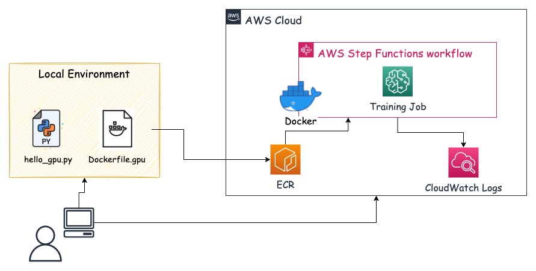

はじめに
Step Functions で SageMaker のリソースを特にカスタムコンテナイメージで使う場合，単純に InstanceType として “ml.g4dn.xlarge” などの GPU マシンを設定するだけでは GPU を使った学習はできなくて，使いたいDockerfile に少し手を加える必要があります．
今回は備忘録も兼ねて Dockerfile の中身を紹介しながら，GPU 環境での動作確認をしたいと思います．
以下の手順で動作確認を行っています．
- ローカルで Dockerfile と動作確認用の Python スクリプトを作成する
- ローカルで build し，AWS ECR に build したイメージを push する
- push したイメージの URI を SageMaker Training Job の TrainingImage に指定する
- Step Functions を実行する
- CloudWatch Logs を確認する
今回の動作確認フローは以下の図のようなイメージです．

自作の「Dockerfile.gpu」ファイル
今回は Tensorflow-gpu のベースイメージを使っています．そのイメージに「nvidia-docker」を追加でインストールすることで Step Functions で GPU 用のカスタムコンテナイメージを使って SageMaker を動作させることができます．
TensorFlow Docker Imagesから好きな GPU 用のイメージを選択して下さい．今回は「tensorflow/tensorflow:2.6.1-gpu」を使用することにします．Optional Features にも記載されていますが，nvidia-docker が必要だよとのことなので，この通りにします．
-gputags are based on Nvidia CUDA. You need nvidia-docker to run them. NOTE: GPU versions of TensorFlow 1.13 and above (this includes thelatest-tags) require an NVidia driver that supports CUDA 10. See NVidia’s support matrix.
大事な部分は以下の4行になります．以前はこちらの記事にも書かれていますが，nvidia-container-toolkit をインストールする必要があったみたいですが，今は nvidia-docker2 をインストールすることで，nvidia-container-toolkit も一緒にインストールされるみたいで，よりシンプルになっています．
RUN distribution=$(. /etc/os-release;echo $ID$VERSION_ID) \
&& curl -s -L https://nvidia.github.io/nvidia-docker/gpgkey | sudo apt-key add - \
&& curl -s -L https://nvidia.github.io/nvidia-docker/$distribution/nvidia-docker.list | sudo tee /etc/apt/sources.list.d/nvidia-docker.list
RUN sudo apt-get update && sudo apt-get install -y nvidia-docker2
今回使用した Dockerfile 全体は以下になります．
# Dockerfile.gpu
FROM tensorflow/tensorflow:2.6.1-gpu
# Set some environment variables.
# PYTHONUNBUFFERED keeps Python from buffering our standard
# output stream, which means that logs can be delivered to the user quickly.
ENV PYTHONUNBUFFERED=TRUE
# PYTHONDONTWRITEBYTECODE keeps Python from writing the .pyc files which
# are unnecessary in this case.
ENV PYTHONDONTWRITEBYTECODE=TRUE
# DEBIAN_FRONTEND prevent from stoping docker build with tzdata
ENV DEBIAN_FRONTEND=noninteractive
RUN apt-get -y update && apt-get install -y --no-install-recommends \
curl \
sudo \
libmecab-dev \
python3.8 \
python3-distutils \
python3-six \
git \
file \
wget \
&& apt-get clean \
&& rm -rf /var/lib/apt/lists/*
# ここが今回のポイントで，nvidia-dockerをインストールします
RUN distribution=$(. /etc/os-release;echo $ID$VERSION_ID) \
&& curl -s -L https://nvidia.github.io/nvidia-docker/gpgkey | sudo apt-key add - \
&& curl -s -L https://nvidia.github.io/nvidia-docker/$distribution/nvidia-docker.list | sudo tee /etc/apt/sources.list.d/nvidia-docker.list
RUN sudo apt-get update && sudo apt-get install -y nvidia-docker2
# 必要なライブラリーをrequirements.lockを使ってインストールします
COPY requirements.lock /tmp/requirements.lock
RUN python3 -m pip install -U pip \
&& python3 -m pip install -r /tmp/requirements.lock \
&& python3 -m pip install sagemaker \
&& python3 -m pip install sagemaker-training \
&& rm /tmp/requirements.lock \
&& rm -rf /root/.cache
# Timezone jst
RUN ln -sf /usr/share/zoneinfo/Asia/Tokyo /etc/localtime
# Locale Japanese
ENV LC_ALL=ja_JP.UTF-8
# Set up the program in the image
ENV PROGRAM_DIR=/opt/program
COPY app $PROGRAM_DIR
WORKDIR $PROGRAM_DIR
ENV PATH="/opt/program:${PATH}"
RUN chmod +x $PROGRAM_DIR/hello_gpu.py
CMD ["python3"]
また，SageMaker で GPU を認識しているかを確認するための Python スクリプトは以下になります．
# hello_gpu.py
import tensorflow as tf
from tensorflow.python.client import device_lib
def main():
# TensorflowのGPU確認
print(f'GPUs Available: {tf.test.is_gpu_available()}')
print(f"Num GPUs Available: {len(tf.config.list_physical_devices('GPU'))}")
print(f'{device_lib.list_local_devices()}')
if __name__ == "__main__":
main()
これらのファイルを用意して，ローカルで build を行います，build した後はそのイメージを ECR に push することで，Step Functions で使用することができます．
※ ECR への push 方法や設定は今回割愛します．
Step Functions の設定
Step Functions とは，AWS が提供する各種サービスを組み合わせたパイプラインを構築するためのワークフローサービスになります．機械学習向けのアクションも用意されていて，今回使用する SageMaker Training Job もその一つになります．
設定は yaml ファイルのような形式で AWS のコンソール画面上で打ち込んでいきます．今回実施する内容の記述は以下の通りになります．
{
"Comment": "Check GPU env",
"StartAt": "Hello-GPU",
"States": {
"Hello-GPU": {
"Comment": "GPUの動作確認",
"Type": "Task",
"Resource": "arn:aws:states:::sagemaker:createTrainingJob.sync",
"Parameters": {
"RoleArn": "<SageMaker Training Jobの実行権限がアタッチされているロール>",
"TrainingJobName": "sample-training-job",
"AlgorithmSpecification": {
"EnableSageMakerMetricsTimeSeries": true,
"TrainingImage": "<アカウントID>.dkr.ecr.ap-northeast-1.amazonaws.com/sample:latest-gpu",
"TrainingInputMode": "File"
},
"EnableInterContainerTrafficEncryption": true,
"EnableManagedSpotTraining": true,
"Environment": {
"SAGEMAKER_PROGRAM": "/opt/program/hello_gpu.py"
},
"ResourceConfig": {
"InstanceCount": 1,
"InstanceType": "ml.g4dn.xlarge",
"VolumeSizeInGB": 20
},
"StoppingCondition": {
"MaxRuntimeInSeconds": 12345,
"MaxWaitTimeInSeconds": 12345
}
},
"End": true
}
}
}
細かい設定内容に関しては，CreateTrainingJob というドキュメントを参考下さい．
ここで，Environment（環境変数）の「SAGEMAKER_PROGRAM」について説明しておきます．この変数に指定したプログラムは Training Job のエントリーポイントにすることができます．
元々は以下のコマンドが実行されるのですが（train.py があればそれが対象となる），実行したいプログラムのパスを指定することで任意のプログラムを実行することができます．
docker run <イメージ> train
ただし，実行権限を与えておく必要があるので，Dockerfile 内で RUN chmod +x $PROGRAM_DIR/hello_gpu.py としています．
あとは，実行結果を CloudWatch Logs で確認して，以下の内容がログに出力されていれば大丈夫です．
GPUs Available: True
Num GPUs Available: 1
おわりに
今回は，Step Functions で SageMaker の Training Job をカスタムコンテナイメージを使って GPU 環境で動かす方法を紹介しました．この方法を使えば，深層学習などの GPU 環境を必要とした学習もパイプラインに組み込むことが可能になります．また，Training Job を使った学習ができれば，実験結果は SageMaker Experiments に保存されるので，再現性を担保することもできます．
Step Functions でカスタムコンテナイメージを使って GPU 環境で学習させたい場合には，参考にして頂ければと思います．
参考
- Available SageMaker Studio Instance Types
- Amazon SageMakerの料金
- NVIDIA Dockerって今どうなってるの？ (20.09 版)
- What is AWS Step Functions?